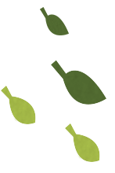

熱門茶園 TOP3


舞鶴茶園
總分:
水尾，依山傍水，瑞穗的舊稱，暗藏在鳥語花香的花東縱谷，得天獨厚，擁有天然美景與純淨水資源，是台灣少有的淨土，油亮碧綠的寬廣草原，宛若仙境，雲霧繚繞，這裡是孕育極品茶的世外桃花源-舞鶴茶園。


晴天茶園
總分:
晴天鹿谷，台灣水鹿群聚之鄉，也是聞名世界台灣烏龍茶發源地，日光、淨泉、山嵐、沃土，涵養涓滴回甘的好茶。


坪林茶園
總分:
水尾，依山傍水，瑞穗的舊稱，暗藏在鳥語花香的花東縱谷，得天獨厚，擁有天然美景與純淨水資源，是台灣少有的淨土，油亮碧綠的寬廣草原，宛若仙境，雲霧繚繞，這裡是孕育極品茶的世外桃花源-吉林茶園。
茶園排行
| 排名 | 茶園名稱 | 總分 |
| 1 | 舞鶴茶園 |
|
| 2 | 晴天茶園 |
|
| 3 | 坪林茶園 |
|
| 4 | 石碇八卦茶園 |
|
| 5 | 春陽茶園 |
|
| 6 | 三峽熊空茶園 |
|
| 7 | 武界台興茶園 |
|
| 8 | 同心雙圓茶園 |
|
| 9 | 二尖山茶園 |
|
| 10 | 阿薩姆茶園 |
|